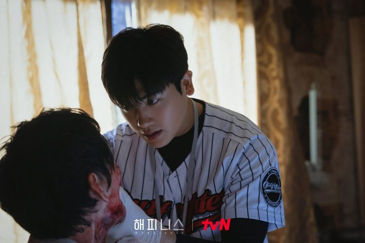

СЧАСТЬЕ
Апокалиптический триллер, действие которого происходит во времена,
когда инфекционные заболевания стали нормой.
В дораме показана классовая дискриминация,
тонкие психологические войны и ожесточённая борьба за выживание,
происходящие в многоэтажном жилом комплексе,
изолированном от внешнего мира из-за нового вида инфекционного заболевания.
Юн Сэ Бом (Хан Хё Чжу) – агент специального отряда полиции. Она решительна, поэтому быстро принимает решения и без колебаний претворяет их в жизнь. Но как только она осуществит свою мечту о переезде в новую квартиру, она столкнётся с беспрецедентным кризисом. Чон И Хён (Пак Хён Сик) – умный и честный детектив из отдела по насильственным преступлениям, работающий на благо общества, а не для личной выгоды. Он всегда был влюблён в свою одноклассницу-друга Юн Сэ Бом. Чон И Хён попадает в водоворот событий после того, как принимает неожиданное предложение от Юн Сэ Бом. Хан Тэ Сок (Чо У Джин) – руководитель медицинского подразделения вооружённых сил. Он тот, кто владеет «ключом» к новому инфекционному заболеванию. Ему было поручено определить причину нового инфекционного заболевания и предотвратить его распространение. Хан Тэ Сок - персонаж, который мгновенно трансформируется, поэтому его трудно «прочитать».